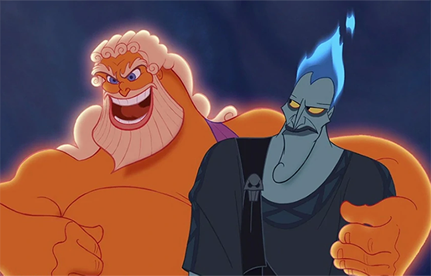
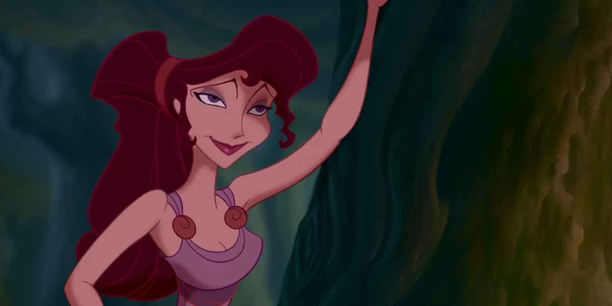
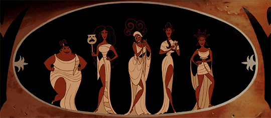

Escultura Greiga - Inserción de Imagen
La escultura griega es una de las grandes maravillas del arte antiguo. En la antigua Grecia, las esculturas no eran solo decorativas, sino que tenían profundas connotaciones religiosas, políticas y sociales.
Las esculturas griegas pueden dividirse en varios períodos: arcaico, clásico y helenístico.
El período arcaico (alrededor del 700-480 a.C.) se caracteriza por figuras rígidas y estilizadas, como los "kouroi" (jóvenes desnudos) y "korai" (mujeres vestidas). Estas esculturas muestran una frontalidad estricta y un intento inicial de representar la figura humana con proporciones ideales.
Durante el período clásico (480-323 a.C.), se observó un gran avance en la naturalidad y el realismo. Artistas como Fidias y Policleto comenzaron a esculpir figuras con movimientos más fluidos y poses naturales. El "Discóbolo" de Mirón y el "Doríforo" de Policleto son ejemplos icónicos de esta época, reflejando un dominio en la representación anatómica y el estudio de la proporción.
El período helenístico (323-31 a.C.) llevó la escultura griega a nuevas alturas de expresividad y dinamismo. Figuras como la "Victoria de Samotracia" y el "Laocoonte" muestran un alto grado de realismo emocional y movimiento dramático, destacándose por su complejidad y detalle.
Hércules (1997) - Imagen flotante
 "Hércules" es una película animada de Disney lanzada en 1997, que reinterpreta el mito griego clásico. La historia comienza en el Monte Olimpo, donde el recién nacido Hércules, hijo de Zeus y Hera, es raptado por el malvado dios Hades. Hades planea usurpar el trono de Zeus y, temiendo la fuerza de Hércules, envía a sus secuaces Pena y Pánico para que lo conviertan en mortal y lo maten. Sin embargo, los secuaces fallan y Hércules mantiene su fuerza divina, aunque pierde su inmortalidad.
Criado en la Tierra por unos amables campesinos, Hércules crece siendo diferente debido a su inmensa fuerza. Deseoso de pertenecer y conocer su verdadera identidad, viaja al templo de Zeus, donde su padre le revela su origen y le encarga recuperar su lugar entre los dioses convirtiéndose en un verdadero héroe. Para lograrlo, se entrena con Filoctetes, conocido como "Phil", un sátiro que ha entrenado a numerosos héroes.
 A medida que Hércules se enfrenta a monstruos y peligros bajo las órdenes de Hades, se enamora de Megara, una mujer cuyo espíritu fue vendido a Hades. Desconociendo su alianza con el villano, Hércules es manipulado y traicionado, pero Megara se redime al sacrificar su propia vida para salvarlo. Esta prueba de amor verdadero permite a Hércules acceder a su potencial máximo, rescatar su alma del inframundo y recuperar su inmortalidad.
Mensaje de mí, este resumen lo hizo Copilot, he hablado mucho con él recientemente sobre muchas cosas, estuvo interesante cómo resumió la historia y cómo sabe que Megara tenía una deuda con Hades, ameisin.
Las Musas - Imagen animada
 Las Musas, en la mitología griega, eran nueve diosas que inspiraban las artes y las ciencias. Hijas de Zeus y Mnemosine (diosa de la memoria), cada una tenía su dominio específico: Clío, la historia; Melpómene, la tragedia; Talía, la comedia; Terpsícore, la danza; Calíope, la poesía épica; Erato: la poesía lírica; Euterpe, la música; Polimnia, la poesía sacra y el canto sagrado y Urania, la astronomía. Se creía que las Musas otorgaban inspiración divina a artistas, poetas, y científicos, guiándolos en sus trabajos creativos y académicos.
Pintura griega - Imagen como background
La pintura de cerámica griega es muy famosa y se divide en dos estilos principales: el de figuras negras y el de figuras rojas. En el estilo de figuras negras, los artistas pintaban las figuras en negro sobre el fondo de la arcilla roja y luego raspaban los detalles. En el estilo de figuras rojas, las figuras permanecían en el color natural de la arcilla mientras el fondo se pintaba de negro, permitiendo un mayor detalle y expresividad.
Los murales y frescos decoraban tanto templos como casas y representaban escenas mitológicas, paisajes y actividades cotidianas. Aunque muchos se han perdido, algunos ejemplos sobreviven en lugares como las tumbas de Vergina. Estos murales muestran una comprensión avanzada de la perspectiva y el uso del color.